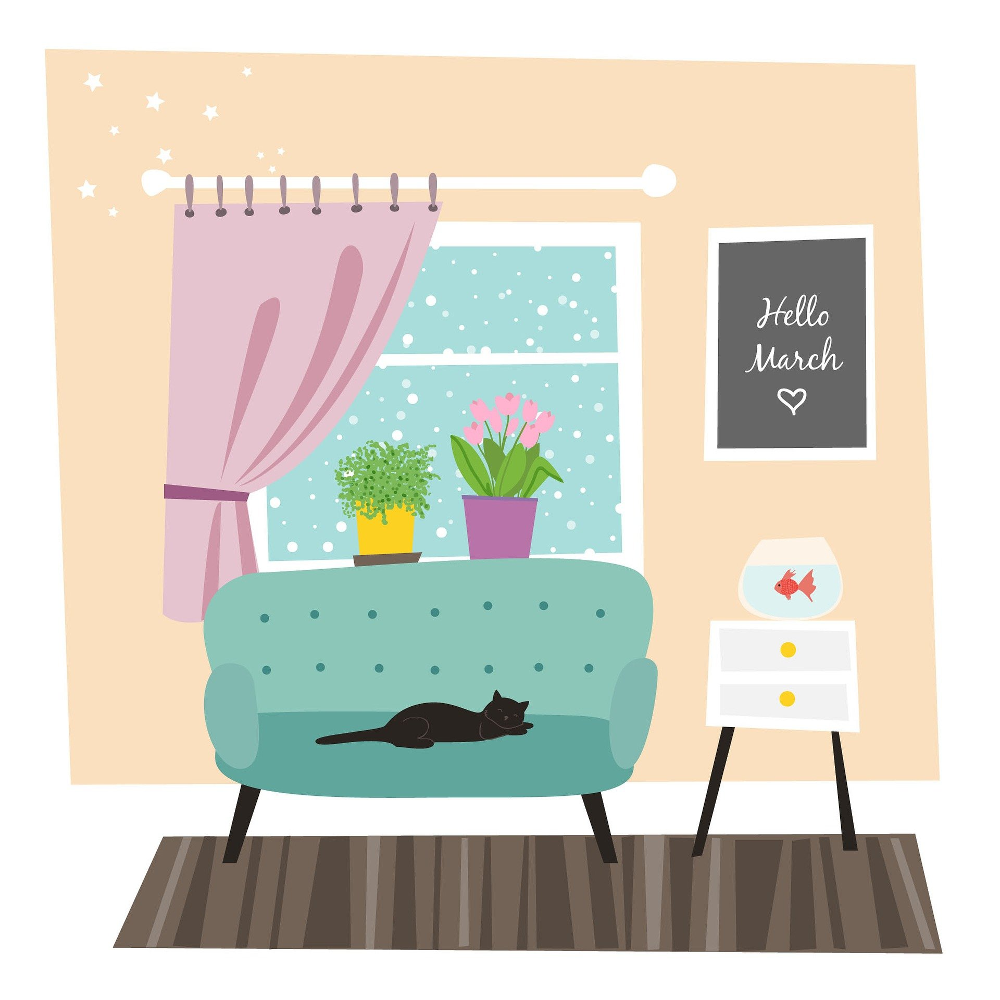

保護ねこカフェ「Baum」は、2032年花野県空野町にオープンしました。
「世界から悲しい思いをするねこちゃんたちをなくそう」を目標に、
ねこちゃんの殺処分ゼロを目指して日々活動しています。
当店のねこちゃんたちは、みんな身寄りのない「保護ねこ」です。
みなさんと触れ合っていただき、少しでも早く人間と生活できるようになることを願っています。
ねこちゃんたちの譲渡やねこちゃんをお迎えするための準備のお手伝いも行っていますので、
興味のある方はぜひご来店ください！